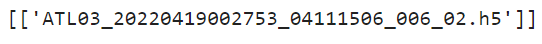
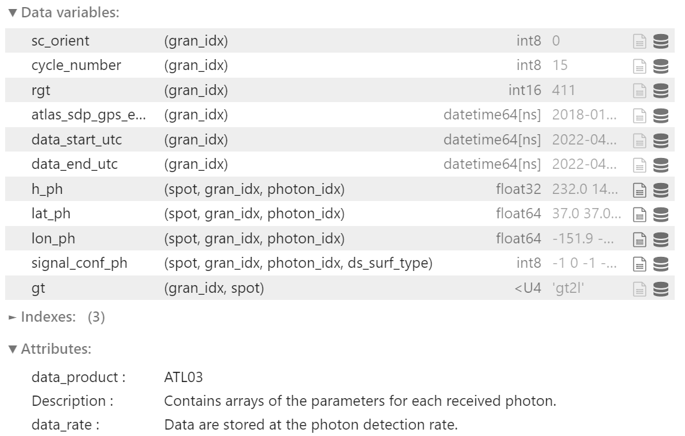
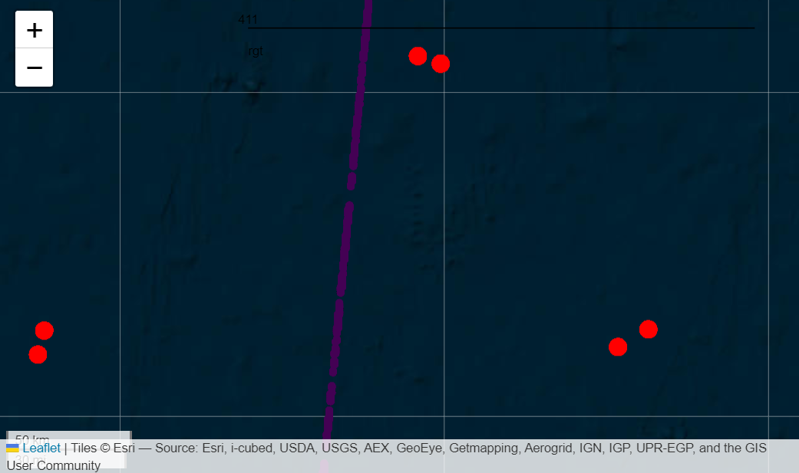

01 - On a QUEST (Query, Unify, Explore SpatioTemporal) to Accelerate ICESat-2 Applications in Ocean Science via icepyx#
Authors: Jessica Scheick, Kelsey Bisson, Zachary Fair, Romina Piunno, Nicole Abib, Alessandro Di Bella, Rachel Tilling
Presented by: Zachary Fair
Abstract#
Collaboration and inclusivity will be critical for tackling modern environmental challenges resulting from increased anthropogenic stressors. Even as we celebrate 2023 as the Year of Open Source Science, many scientific disciplines - and thus their technologies, tools, and expertise - remain siloed. The ICESat-2 (Ice, Cloud, and land Elevation Satellite 2) was launched in 2018 with a strong focus towards cryospheric investigations. However, the sensor’s contributions to advances among the vegetation and oceanography communities are nontrivial. New environmental discoveries are made possible by exposing the mission and its unique capabilities to other disciplines.
The QUEST (Query, Unify, Explore SpatioTemporal) Python software library aims to bridge this divide. QUEST is a submodule of icepyx, a community of data managers, users, and developers and a software library providing tooling for ICESat-2 data access, visualization, processing, and analysis locally and in the cloud. The QUEST module capitalizes on the object-oriented properties of Python (and thus icepyx) to create a framework for easily integrating additional datasets into a single workflow. The motivating use case for developing QUEST came from oceanography and aims to combine ICESat-2 data with Argo data to investigate sea ice phytoplankton. Wanting to make their work as interoperable as possible, the development team created QUEST with a templated framework to enable easy addition of additional sensors and datasets. This presentation will showcase the QUEST module and the ways in which it can and is enabling oceanographic investigations.
What is icepyx?#
icepyx is both a software library and a community composed of ICESat-2 data users, developers, and the scientific community. We are working together to develop a shared library of resources - including existing resources, new code, tutorials, and use-cases/examples - that simplify the process of querying, obtaining, analyzing, and manipulating ICESat-2 and relevant ancillary datasets to enable scientific discovery.

Why use icepyx?
icepyx was started and initially developed to provide easy programmatic access to ICESat-2 data (before other great tools like earthaccess existed!) and facilitate collaborative development around ICESat-2 data products, including training, skill building, and support around practicing open science and contributing to open-source software. Thanks to contributions from countless community members, icepyx can (for ICESat-2 data):
search for available data granules (data files)
order and download data or access it directly in the cloud
order a subset of data: clipped in space, time, containing fewer variables, or a few other options provided by NSIDC
search through the available ICESat-2 data variables
read ICESat-2 data into xarray DataArrays, including merging data from multiple files
search for concurrent datasets like Argo via the QUEST module
Detailed tutorials and documentation for all of this functionality are available in the icepyx documentation.
What is QUEST?#
QUEST - Query Unify Explore SpatioTemporal - is a companion module packaged with icepyx that simplifies the process of querying and combining multiple datasets. Very few scientific investigations are limited to data from just one sensor. Yet figuring out how to obtain and work with the data from each sensor can be time consuming and tedious. QUEST leverages the fact that some high level inputs, like our space and time bounds, remain consistent across all datasets. A QUEST object verifies the ranges are valid and stores them once in formats (e.g. datetime objects) that are easily modified into formatted application programming interface (API) input strings. Then, the QUEST object will search and access data for each of the datasets that have been added to it.
Datasets available via the QUEST object are created by users. Currently, ICESat-2 and Argo (including Argo-BGC) data are available via QUEST. Behind the scenes, a template outlining the functions needed to access each dataset was completed to provide QUEST with the dataset-specific instructions for accessing that dataset. By using this template approach, anyone can easily add a new dataset to the existing QUEST infrastructure while capitalizing on the existing input handling. In the case of Argo and ICESat-2, other libraries (argovis and icepyx’s Query module, respectively) are used to provide these instructions to QUEST.

Datasets#
ICESat-2 Basics#

The Ice, Clouds, and Land Elevation Satellite-2 (ICESat-2) is a space-based lidar altimeter launched in September 2018 to measure changes in land ice, glaciers, and sea ice. Additional data products allow for analysis of vegetation canopies, inland water, and oceans.
Over the ocean, ICESat-2 data have been used to (1) generate vertical profiles of particulate backscatter and light attenuation, (2) map water bathymetry accurate to ~0.5 m, and (3) contextualize phytoplankton phenology under sea ice.
Argo Basics#

Argo floats are untethered sensors that bob in the ocean to collect data as they are carried by ocean currents. Argo floats can control their own buoyancy but not their trajectory. They primarily measure salinity, temperature, and biological activity within the Earth’s oceans, though some Argo floats also provide optical measurements (light attenuation at 490 nm, particulate backscatter at 700 nm) to validate satellite measurements.
A portion of Argo floats are situated near the poles, and they sometimes drift underneath sea ice. Ocean conditions beneath sea ice are not well understood, so polar Argo floats provide useful data for the oceanographic community.

QUEST Example#
Here we demonstrate the use of the QUEST module to access coincident ICESat-2 and Argo data and plot that data. An interactive, Jupyter Notebook version of this workflow is available under the Examples tab of the icepyx documentation.
# Basic packages
import geopandas as gpd
import matplotlib.pyplot as plt
import numpy as np
from pprint import pprint
# icepyx and QUEST
import icepyx as ipx
Define the Query Object#
To start looking for data, we begin by defining our Quest object. We provide the following bounding parameters:
spatial_extent: Data is constrained to a bounding box over the Pacific Ocean.date_range: Only grab data from April 12-26, 2022.
# Spatial bounds, given as SW/NE corners
spatial_extent = [-154, 30, -143, 37]
# Start and end dates, in YYYY-MM-DD format
date_range = ['2022-04-12', '2022-04-26']
# Initialize the QUEST object
reg_a = ipx.Quest(spatial_extent=spatial_extent, date_range=date_range)
print(reg_a)

We have defined our spatial and temporal domains, now we need to add datasets to our query!
Getting the ICESat-2 data#
If we want to extract information about the water column, the ICESat-2 ATL03 product is likely the desired choice.
Normally, the query would return 14 ICESat-2 files for downloading. This may be potentially useful for a regular user, but it is excessive for this example. Hence, we specify a reference ground track (RGT, track) below to limit our results to only one granule.
# ICESat-2 product
short_name = 'ATL03'
# Reference ground track (RGT)
track = '411'
# Add ICESat-2 to QUEST query
reg_a.add_icesat2(product=short_name, tracks=track)
print(reg_a)

We can now see the available ICESat-2 file over our region of interest.
pprint(reg_a.datasets['icesat2'].avail_granules(ids=True))

For more information on functions that can be used for ICESat-2, users are referred to the icepyx ReadtheDocs
Getting the Argo data#
Accessing Argo data is similar to ICESat-2:
reg_a.add_argo()
By default, Argo data is organized as vertical profiles of temperature as a function of pressure. The user can supply a list of desired parameters - including Argo BGC parameters - using the code below:
# Customized variable query when adding Argo to our QUEST object
reg_a.add_argo(params=['temperature', 'salinity'])
Additionally, a user may view or update the list of Argo parameters at any time:
# Update the list of Argo parameters
reg_a.datasets['argo'].params = ['temperature']
Finally, let’s search for Argo data with our current parameters!
reg_a.datasets['argo'].search_data()

Downloading the data#
We can now access data for both ICESat-2 and Argo! The below function will download both datasets at once.
# Path for saved ICESat-2 files
path = '/icepyx/quest/downloaded-data/'
# Access ICESat-2 and Argo data simultaneously
reg_a.download_all()
Important: With our current code, the Argo data is compiled into a Pandas DataFrame, whereas the processed ICESat-2 data is saved as HDF-5 files to the directory given above.
We now have 13 Argo profiles, each containing pressure, temperature, and salinity!
If the user wishes to add more profiles to a pre-existing query, they should use the following syntax:
reg_a.download_all(path, keep_existing=True)
Reading and Visualizing the Data#
We already have the Argo data ready in a Pandas DataFrame, but the ICESat-2 data is saved as several HDF-5 files. Because these data files are often large, we only focus on one granule for this example.
The below workflow uses the icepyx Read module to quickly load ICESat-2 data into the Xarray format.
file_path = f'{path}/quest-test-data/processed_ATL03_data.h5'
reader = ipx.Read(data_source=file_path)
# Specify the variables to be read
reader.vars.append(beam_list=['gt2l'],
var_list=['h_ph', 'lat_ph', 'lon_ph', 'signal_conf_ph'])
# Load ICESat-2 data into Xarray
ds = reader.load()

To make the data easier to plot, let’s convert the data into a Pandas DataFrame, just like Argo. Since we are only looking at one file, we have sped up the conversion to a DataFrame by removing redundant Xarray dimensions.
# Convert from Xarray to Pandas
is2_pd = (ds.squeeze()
.reset_coords()
.drop_vars(['source_file','data_start_utc','data_end_utc','gran_idx'])
.to_dataframe()
)
# Create a new dataframe with only "ocean" photons, as indicated by the "ds_surf_type" flag
is2_pd = is2-pd.reset_index(level=[0,1,2])
is2_pd_ocean = is2_pd[is2_pd.ds_surf_type==1].drop(columns='photon_index')
# Set Argo data as its own DataFrame
argo_df = reg_a.datasets['argo'].argodata
To view the relative locations of ICESat-2 and Argo, the below code converts the data into GeoDataFrames and uses the explore() function. Note that for large datasets like ICESat-2, loading the map might take a while.
# Convert to GeodataFrames
is2_gdf = gpd.GeoDataFrame(is2_pd_ocean,
geometry=gpd.points_from_xy(is2_pd_ocean['lon_ph'], is2_pd_ocean['lat_ph']),
crs='EPSG:4326')
argo_gdf = gpd.GeoDataFrame(argo_df,
geometry=gpd.points_from_xy(argo_df['lon'], argo_df['lat']),
crs='EPSG:4326')
# Drop time variables (these cause errors with the "explore" function)
is2_gdf = is2_gdf.drop(['delta_time', 'atlas_sdp_gps_epoch'], axis=1)
# Plot the ICESat-2 track (medium/high confidence photons only) on a map
m = is2_gdf[is2_gdf['signal_conf_ph']>=3].explore(column='rgt',
tiles='Esri.WorldImagery',
name='ICESat-2')
# Add Argo float locations to map
argo_gdf.explore(m=m, name='Argo', marker_kwds={'radius': 6}, color='red')

While we’re at it, let’s check out the temperature/pressure profiles for all of the Argo floats.
# Plot vertical profile of temperature vs. pressure for all of the floats
fig, ax = plt.subplots(figsize=(12, 6))
for pid in np.unique(argo_df['profile_id']):
argo_df[argo_df['profile_id']==pid].plot(ax=ax, x='temperature', y='pressure', label=pid)
plt.gca().invert_yaxis()
plt.xlabel('Temperature [$\degree$C]')
plt.ylabel('Pressure [hPa]')
plt.ylim([750, -10])
plt.tight_layout()

Lastly, let’s look at some near-coincident ICESat-2 and Argo data in a multi-panel plot.
# Only consider ICESat-2 signal photons
is2_pd_signal = is2_pd_ocean[is2_pd_ocean['signal_conf_ph']>=0]
## Multi-panel plot showing ICESat-2 and Argo data
# Calculate Extent
lons = [-154, -143, -143, -154, -154]
lats = [30, 30, 37, 37, 30]
lon_margin = (max(lons) - min(lons)) * 0.1
lat_margin = (max(lats) - min(lats)) * 0.1
# Create Plot
fig,([ax1,ax2],[ax3,ax4]) = plt.subplots(2, 2, figsize=(12, 6))
# Plot Relative Global View
world = gpd.read_file(gpd.datasets.get_path('naturalearth_lowres'))
world.plot(ax=ax1, color='0.8', edgecolor='black')
argo_df.plot.scatter(ax=ax1, x='lon', y='lat', s=25.0, c='green', zorder=3, alpha=0.3)
is2_pd_signal.plot.scatter(ax=ax1, x='lon_ph', y='lat_ph', s=10.0, zorder=2, alpha=0.3)
ax1.plot(lons, lats, linewidth=1.5, color='orange', zorder=2)
ax1.set_xlim(-160,-100)
ax1.set_ylim(20,50)
ax1.set_aspect('equal', adjustable='box')
ax1.set_xlabel('Longitude', fontsize=18)
ax1.set_ylabel('Latitude', fontsize=18)
# Plot Zoomed View of Ground Tracks
argo_df.plot.scatter(ax=ax2, x='lon', y='lat', s=50.0, c='green', zorder=3, alpha=0.3)
is2_pd_signal.plot.scatter(ax=ax2, x='lon_ph', y='lat_ph', s=10.0, zorder=2, alpha=0.3)
ax2.plot(lons, lats, linewidth=1.5, color='orange', zorder=1)
ax2.scatter(-151.98956, 34.43885, color='orange', marker='^', s=80, zorder=4)
ax2.set_xlim(min(lons) - lon_margin, max(lons) + lon_margin)
ax2.set_ylim(min(lats) - lat_margin, max(lats) + lat_margin)
ax2.set_aspect('equal', adjustable='box')
ax2.set_xlabel('Longitude', fontsize=18)
ax2.set_ylabel('Latitude', fontsize=18)
# Plot ICESat-2 along-track vertical profile. A dotted line notes the location of a nearby Argo float
is2 = ax3.scatter(is2_pd_signal['lat_ph'], is2_pd_signal['h_ph']+13.1, s=0.1)
ax3.axvline(34.43885, linestyle='--', linewidth=3, color='black')
ax3.set_xlim([34.3, 34.5])
ax3.set_ylim([-20, 5])
ax3.set_xlabel('Latitude', fontsize=18)
ax3.set_ylabel('Approx. IS-2 Depth [m]', fontsize=16)
ax3.set_yticklabels(['15', '10', '5', '0', '-5'])
# Plot vertical ocean profile of the nearby Argo float
argo_df[argo_df['profile_id']=='4903409_053'].plot(ax=ax4, x='temperature', y='pressure', linewidth=3)
ax4.set_yscale('log')
ax4.invert_yaxis()
ax4.get_legend().remove()
ax4.set_xlabel('Temperature [$\degree$C]', fontsize=18)
ax4.set_ylabel('Argo Pressure', fontsize=16)
plt.tight_layout()

Wrap-Up#
In this notebook, we demonstrated that, thanks to icepyx and QUEST, it is easy to access ICESat-2 and Argo data simultaneously. Because ICESat-2 and Argo both have the capabilities to offer near real-time, vertically-resolved subsurface information of the world’s oceans, the QUEST module will be helpful for the continued monitoring of ocean biology and biogeochemistry.
Although we highlight Argo data in this presentation, the QUEST framework is designed to easily add other datasets to compliment ICESat-2 or Argo. We hope to expand the capabilities of QUEST with the help of the broader scientific community. Please get in touch and tell us about your dataset of interest!